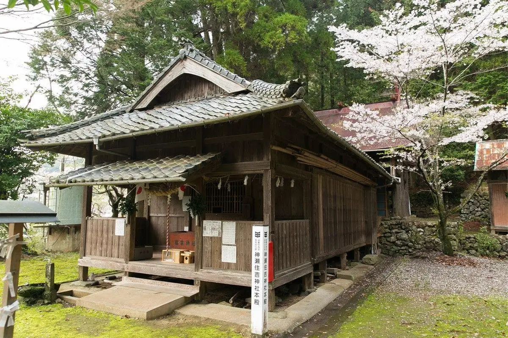
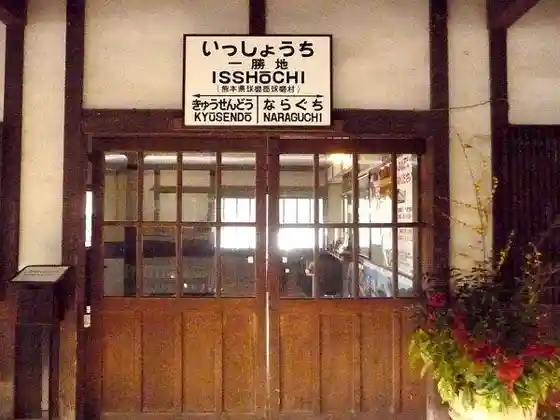
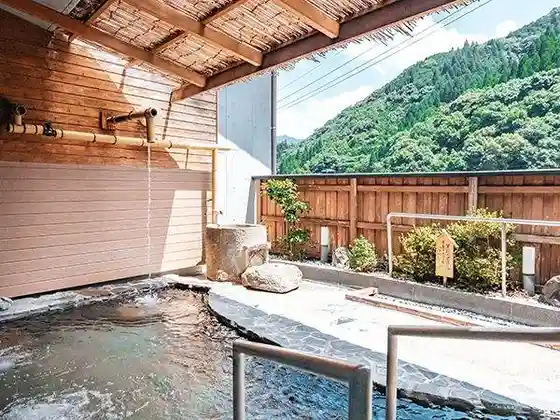
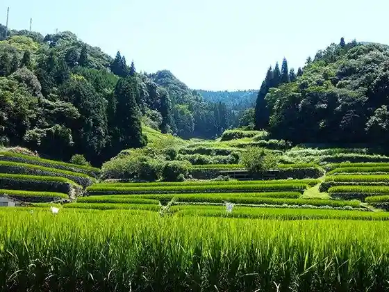
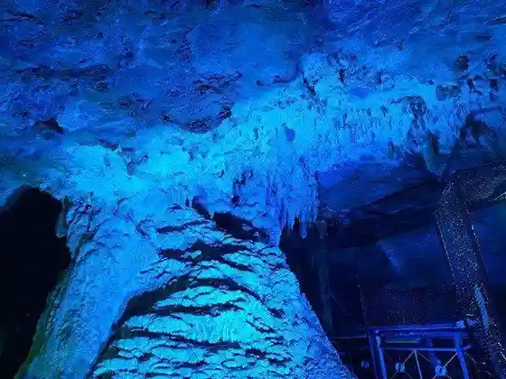

Japan / Kumamoto / Kuma
Kuma
Kuma · Kumamoto
Kuma
Highlighted on the Kumamoto map.

Sights
Issho Chi Eki
Kuma, Kumamoto · 0966-32-0019 · Official / source link

Issho Chi Onsen
Kuma, Kumamoto · 0966-32-0200 · Official / source link

Oni no Kuchi Tanada
Kuma, Kumamoto · 0966-32-1114 · Official / source link

Kyusendo
Kuma, Kumamoto · 0966-32-0080 · Official / source link

U Kuchi Kannon Do
Kuma, Kumamoto · 0966-33-0921 · Official / source link
Issho Chi Mage Sosogi Workshop
Kuma, Kumamoto · 0966-32-1192 · Official / source link
Matsutani Tanada Tembo Tokoro
Kuma, Kumamoto · 0966-32-1114 · Official / source link
Mai Toko Dai Sakura
Kuma, Kumamoto · 0966-32-1115 · Official / source link
Konose Sumiyoshi Shrine
Kuma, Kumamoto · Official / source link
Hashizume Hashi
Kuma, Kumamoto · Official / source link